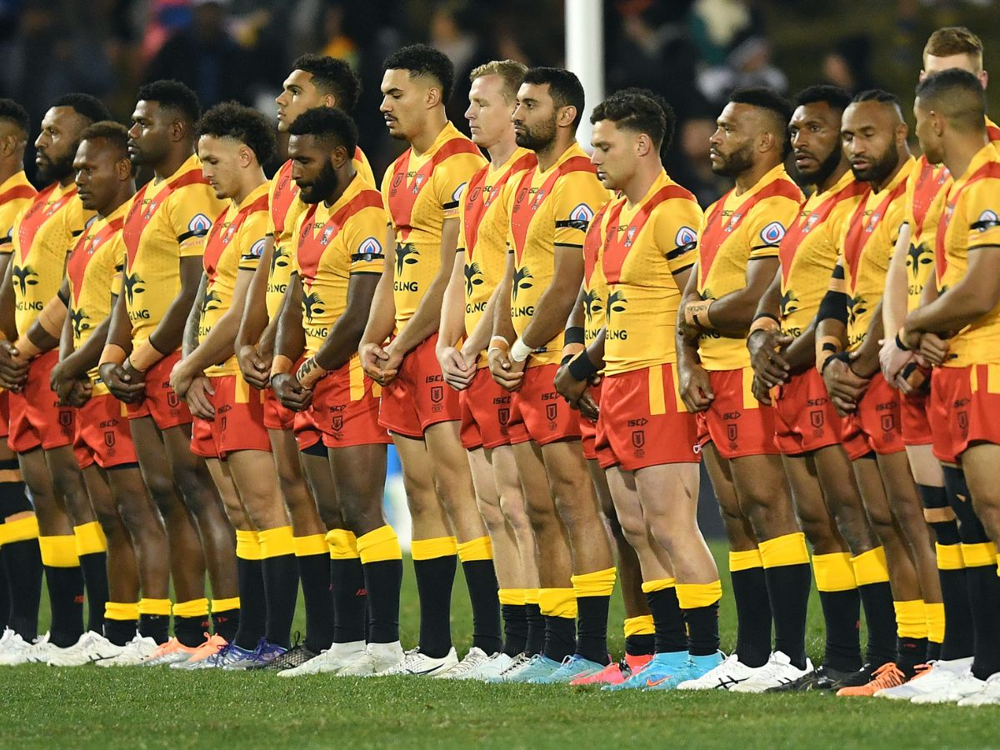
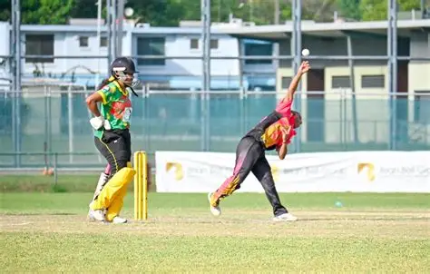
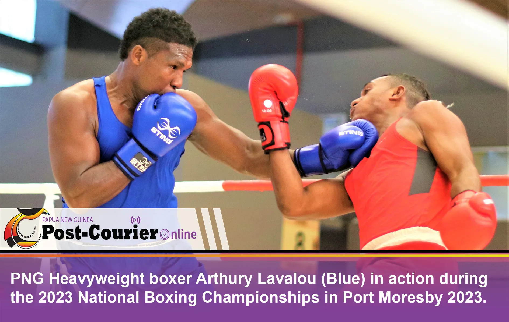
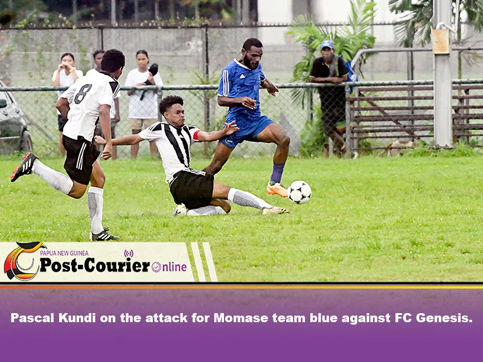

Overview
Papua New Guinea is a vibrant Pacific nation with a rich sporting culture. The country has produced exceptional athletes and maintains a passionate following for various sports including rugby league, Australian rules football, cricket, and athletics. The nation competes in regional and international sporting events, showcasing the talent and determination of PNG athletes.
Sports play an integral role in PNG society, bringing communities together and inspiring the youth of the nation to pursue excellence.
Popular Sports
🏉 Rugby League
Rugby league is one of PNG's most beloved sports. The national team, the Kumuls, competes in international tournaments and has a strong presence in the Pacific Rugby League Cup.

🏈 Australian Rules Football
AFL has grown significantly in popularity. PNG has a dedicated following and participates in international AFL competitions and development programs.

🏏 Cricket
Cricket is gaining momentum with PNG's national cricket team competing in ODI and T20 formats. The sport attracts young talent across the archipelago.

🏃 Athletics
Track and field events showcase PNG's sprinting and distance running talent. Athletes regularly compete in Pacific regional championships.

🥊 Boxing
Boxing has produced several notable fighters from Papua New Guinea who have competed at regional and international levels.

⚽ Football (Soccer)
Association football continues to grow with grassroots programs developing young talent for the national team and regional competitions.

National Teams
Kumuls - Rugby League National Team
Coach: Jason Demetriou
Achievements:The kumuls played their first-ever international matches against England on July 6,1975,at Lloyd Robson in Port Moresby,winning 40-12. They have become regular participants in World Cup tournaments and the Pacific Rugby League Cup.The team first competed in the Rugby League World Cup in the 1985-89 competition and made history by finishing top of their pool in the 2000 World Cup,qualifying for the quarter-finals for the first time. The team has shown impressive development and competitive spirit. The team aims to take their place in Australia's National Rugby League competition by 2028, showcasing the growing potential of Papua New Guinea. The Kumuls achievements reflect the passion and dedication of the players and the support of the Papua New Guinea community. Their success is a testament to the hard work and commitment of everyone involved.
Notable: PNG reached the Rugby League World Cup quarterfinals in recent tournaments.
National Cricket Team
Status: Associates with the International Cricket Council (ICC)
Participation: Competes in T20 World Cup qualifiers and regional cricket tournaments.
Development: Investment in cricket infrastructure and talent development programs across the nation.
National Football (Soccer) Team
Nickname: The Nati
Competition: Participates in AFC (Asian Football Confederation) and OFC (Oceania Football Confederation) competitions.
Goal: Building a stronger domestic league and developing future national team players.
AFL Nacional Team
Flag: Papua New Guinea makes a strong showing in Australian Rules Football.
International: Participates in international AFL championships and exhibition matches.
Growth: AFL grassroots programs are expanding throughout the country.
Notable Athletes
Alex Johnston
Rugby League
Talented rugby league player representing PNG on the international stage.
C:\Users\Admin\Downloads\kumSonia Ghadie
Sports Personality
Prominent figure in PNG sports and community development initiatives.
David Tsokamocha
Cricket
Rising cricket talent contributing to PNG's international cricket presence.
Kula Nauruan
Track & Field
Competed in Pacific regional athletics championships in sprinting events.
Lae Football Club Stars
Football/Soccer
Talented players from Lae representing PNG in domestic and regional football.
Rapt Vagi
Rugby League
Skilled rugby league athlete contributing to the strength of PNG teams.
Major Sporting Events
International Competitions
- Rugby League World Cup: PNG's Kumuls regularly compete in this premier international tournament
- ICC Cricket World Cup Qualifiers: National cricket team pursuit of full international status
- Pacific Games: Multi-sport event featuring athletes from across the Pacific region
- Commonwealth Games: PNG sends delegations to compete in various sports
- AFC Asian Cup Qualifiers: National football team competing for qualification
- AFL International Championships: Growing participation in Australian Rules Football
Domestic Competitions
- PNG National Rugby League: Professional and semi-professional rugby league competition
- PNG Football Association League: Top-tier domestic football competition
- National Athletics Championships: Premier track and field event
- PNG Cricket Prime Minister's Cup: National domestic cricket tournament
- Provincial Sports Competitions: Inter-provincial competitions across all regions